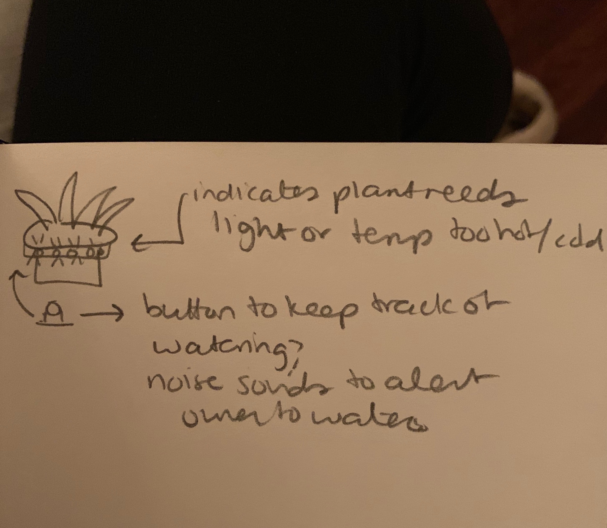
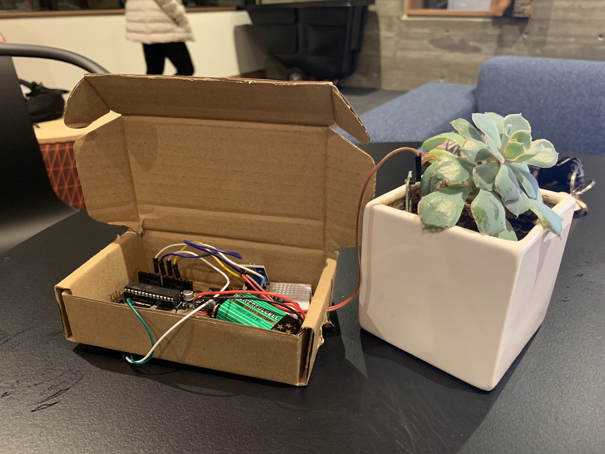

Here is my very first sketch for my concept idea for my final project. It is a plant pot that changes colors if plant not getting enough light or water or temperature is too cold for plant
Originally, I wanted to use the lights or the Twitter API to signify to the user that their plant needs to be watered. However, after some bumps in the road with p5, I decided to use a speaker instead, which also ended up being super fun. My final plant sensor that notifies you that your plant needs to be watered by making sounds using the buzzer. The sensor has various levels of dryness, and will make more noise the more you need to water your plant. This project is inspired by my Croton plant which is very fussy, and which I really need help with taking care of.
Here is the code I used! I was able to figure out the soil moisture sensor using a tutorial fora similar sensor on https://learn.sparkfun.com/tutorials/soil-moisture-sensor-hookup-guide/all and the Piezo beeping from http://www.hobbytronics.co.uk/arduino-tutorial7-piezo-beep
//Code for Plant Moisture Sensor!!
//Initializing notes and tone pin for Jepoardy. Songs brought to you by Brett Hagman, www.roguerobotics.
#define OCTAVE_OFFSET 0
#define TONE_PIN 9
#define NOTE_C4 262
#define NOTE_CS4 277
#define NOTE_D4 294
#define NOTE_DS4 311
#define NOTE_E4 330
#define NOTE_F4 349
#define NOTE_FS4 370
#define NOTE_G4 392
#define NOTE_GS4 415
#define NOTE_A4 440
#define NOTE_AS4 466
#define NOTE_B4 494
#define NOTE_C5 523
#define NOTE_CS5 554
#define NOTE_D5 587
#define NOTE_DS5 622
#define NOTE_E5 659
#define NOTE_F5 698
#define NOTE_FS5 740
#define NOTE_G5 784
#define NOTE_GS5 831
#define NOTE_A5 880
#define NOTE_AS5 932
#define NOTE_B5 988
#define NOTE_C6 1047
#define NOTE_CS6 1109
#define NOTE_D6 1175
#define NOTE_DS6 1245
#define NOTE_E6 1319
#define NOTE_F6 1397
#define NOTE_FS6 1480
#define NOTE_G6 1568
#define NOTE_GS6 1661
#define NOTE_A6 1760
#define NOTE_AS6 1865
#define NOTE_B6 1976
#define NOTE_C7 2093
#define NOTE_CS7 2217
#define NOTE_D7 2349
#define NOTE_DS7 2489
#define NOTE_E7 2637
#define NOTE_F7 2794
#define NOTE_FS7 2960
#define NOTE_G7 3136
#define NOTE_GS7 3322
#define NOTE_A7 3520
#define NOTE_AS7 3729
#define NOTE_B7 3951
int notes[] = { 0,
NOTE_C4, NOTE_CS4, NOTE_D4, NOTE_DS4, NOTE_E4, NOTE_F4, NOTE_FS4, NOTE_G4, NOTE_GS4, NOTE_A4, NOTE_AS4, NOTE_B4,
NOTE_C5, NOTE_CS5, NOTE_D5, NOTE_DS5, NOTE_E5, NOTE_F5, NOTE_FS5, NOTE_G5, NOTE_GS5, NOTE_A5, NOTE_AS5, NOTE_B5,
NOTE_C6, NOTE_CS6, NOTE_D6, NOTE_DS6, NOTE_E6, NOTE_F6, NOTE_FS6, NOTE_G6, NOTE_GS6, NOTE_A6, NOTE_AS6, NOTE_B6,
NOTE_C7, NOTE_CS7, NOTE_D7, NOTE_DS7, NOTE_E7, NOTE_F7, NOTE_FS7, NOTE_G7, NOTE_GS7, NOTE_A7, NOTE_AS7, NOTE_B7
};
// Library of songs, any of which can be used for the plant sensor. Currently using Jeopardy because it is fun :)
//char *song = "The Simpsons:d=4,o=5,b=160:c.6,e6,f#6,8a6,g.6,e6,c6,8a,8f#,8f#,8f#,2g,8p,8p,8f#,8f#,8f#,8g,a#.,8c6,8c6,8c6,c6";
//char *song = "Indiana:d=4,o=5,b=250:e,8p,8f,8g,8p,1c6,8p.,d,8p,8e,1f,p.,g,8p,8a,8b,8p,1f6,p,a,8p,8b,2c6,2d6,2e6,e,8p,8f,8g,8p,1c6,p,d6,8p,8e6,1f.6,g,8p,8g,e.6,8p,d6,8p,8g,e.6,8p,d6,8p,8g,f.6,8p,e6,8p,8d6,2c6";
//char *song = "Entertainer:d=4,o=5,b=140:8d,8d#,8e,c6,8e,c6,8e,2c.6,8c6,8d6,8d#6,8e6,8c6,8d6,e6,8b,d6,2c6,p,8d,8d#,8e,c6,8e,c6,8e,2c.6,8p,8a,8g,8f#,8a,8c6,e6,8d6,8c6,8a,2d6";
//char *song = "Looney:d=4,o=5,b=140:32p,c6,8f6,8e6,8d6,8c6,a.,8c6,8f6,8e6,8d6,8d#6,e.6,8e6,8e6,8c6,8d6,8c6,8e6,8c6,8d6,8a,8c6,8g,8a#,8a,8f";
//char *song = "Bond:d=4,o=5,b=80:32p,16c#6,32d#6,32d#6,16d#6,8d#6,16c#6,16c#6,16c#6,16c#6,32e6,32e6,16e6,8e6,16d#6,16d#6,16d#6,16c#6,32d#6,32d#6,16d#6,8d#6,16c#6,16c#6,16c#6,16c#6,32e6,32e6,16e6,8e6,16d#6,16d6,16c#6,16c#7,c.7,16g#6,16f#6,g#.6";
//char *song = "MASH:d=8,o=5,b=140:4a,4g,f#,g,p,f#,p,g,p,f#,p,2e.,p,f#,e,4f#,e,f#,p,e,p,4d.,p,f#,4e,d,e,p,d,p,e,p,d,p,2c#.,p,d,c#,4d,c#,d,p,e,p,4f#,p,a,p,4b,a,b,p,a,p,b,p,2a.,4p,a,b,a,4b,a,b,p,2a.,a,4f#,a,b,p,d6,p,4e.6,d6,b,p,a,p,2b";
//char *song = "StarWars:d=4,o=5,b=45:32p,32f#,32f#,32f#,8b.,8f#.6,32e6,32d#6,32c#6,8b.6,16f#.6,32e6,32d#6,32c#6,8b.6,16f#.6,32e6,32d#6,32e6,8c#.6,32f#,32f#,32f#,8b.,8f#.6,32e6,32d#6,32c#6,8b.6,16f#.6,32e6,32d#6,32c#6,8b.6,16f#.6,32e6,32d#6,32e6,8c#6";
//char *song = "GoodBad:d=4,o=5,b=56:32p,32a#,32d#6,32a#,32d#6,8a#.,16f#.,16g#.,d#,32a#,32d#6,32a#,32d#6,8a#.,16f#.,16g#.,c#6,32a#,32d#6,32a#,32d#6,8a#.,16f#.,32f.,32d#.,c#,32a#,32d#6,32a#,32d#6,8a#.,16g#.,d#";
//char *song = "TopGun:d=4,o=4,b=31:32p,16c#,16g#,16g#,32f#,32f,32f#,32f,16d#,16d#,32c#,32d#,16f,32d#,32f,16f#,32f,32c#,16f,d#,16c#,16g#,16g#,32f#,32f,32f#,32f,16d#,16d#,32c#,32d#,16f,32d#,32f,16f#,32f,32c#,g#";
//char *song = "A-Team:d=8,o=5,b=125:4d#6,a#,2d#6,16p,g#,4a#,4d#.,p,16g,16a#,d#6,a#,f6,2d#6,16p,c#.6,16c6,16a#,g#.,2a#";
//char *song = "Flinstones:d=4,o=5,b=40:32p,16f6,16a#,16a#6,32g6,16f6,16a#.,16f6,32d#6,32d6,32d6,32d#6,32f6,16a#,16c6,d6,16f6,16a#.,16a#6,32g6,16f6,16a#.,32f6,32f6,32d#6,32d6,32d6,32d#6,32f6,16a#,16c6,a#,16a6,16d.6,16a#6,32a6,32a6,32g6,32f#6,32a6,8g6,16g6,16c.6,32a6,32a6,32g6,32g6,32f6,32e6,32g6,8f6,16f6,16a#.,16a#6,32g6,16f6,16a#.,16f6,32d#6,32d6,32d6,32d#6,32f6,16a#,16c.6,32d6,32d#6,32f6,16a#,16c.6,32d6,32d#6,32f6,16a#6,16c7,8a#.6";
char *song = "Jeopardy:d=4,o=6,b=125:c,f,c,f5,c,f,2c,c,f,c,f,a.,8g,8f,8e,8d,8c#,c,f,c,f5,c,f,2c,f.,8d,c,a#5,a5,g5,f5,p,d#,g#,d#,g#5,d#,g#,2d#,d#,g#,d#,g#,c.7,8a#,8g#,8g,8f,8e,d#,g#,d#,g#5,d#,g#,2d#,g#.,8f,d#,c#,c,p,a#5,p,g#.5,d#,g#";
//char *song = "MahnaMahna:d=16,o=6,b=125:c#,c.,b5,8a#.5,8f.,4g#,a#,g.,4d#,8p,c#,c.,b5,8a#.5,8f.,g#.,8a#.,4g,8p,c#,c.,b5,8a#.5,8f.,4g#,f,g.,8d#.,f,g.,8d#.,f,8g,8d#.,f,8g,d#,8c,a#5,8d#.,8d#.,4d#,8d#.";
//char *song = "MissionImp:d=16,o=6,b=95:32d,32d#,32d,32d#,32d,32d#,32d,32d#,32d,32d,32d#,32e,32f,32f#,32g,g,8p,g,8p,a#,p,c7,p,g,8p,g,8p,f,p,f#,p,g,8p,g,8p,a#,p,c7,p,g,8p,g,8p,f,p,f#,p,a#,g,2d,32p,a#,g,2c#,32p,a#,g,2c,a#5,8c,2p,32p,a#5,g5,2f#,32p,a#5,g5,2f,32p,a#5,g5,2e,d#,8d";
//char *song = "KnightRider:d=4,o=5,b=125:16e,16p,16f,16e,16e,16p,16e,16e,16f,16e,16e,16e,16d#,16e,16e,16e,16e,16p,16f,16e,16e,16p,16f,16e,16f,16e,16e,16e,16d#,16e,16e,16e,16d,16p,16e,16d,16d,16p,16e,16d,16e,16d,16d,16d,16c,16d,16d,16d,16d,16p,16e,16d,16d,16p,16e,16d,16e,16d,16d,16d,16c,16d,16d,16d";
//Now begins my setup!
int val = 0; //val for moisture
int soilPin = A0;//soil moisture sensor
int soilPower = 7;//soil moisture output
int WetValue = 574; // callibrated wet value
int airValue = 1023; //dry value when sensor is exposed to no water
//sets up buzzer and soil moisture sensor
void setup()
{
Serial.begin(9600); // open serial over USB
pinMode(soilPower, OUTPUT);//soil moisture output
digitalWrite(soilPower, LOW);
pinMode(9, OUTPUT); // buzzer output
beep(200);//initial beeps to prove that it is on and working
beep(200);
delay(1000);
}
//Music playing method for many many lines brought to you by Brett Hagman, www.roguerobotics.com (again because credit is important)
#define isdigit(n) (n >= '0' && n <= '9')
void play_rtttl(char *p)
{
byte default_dur = 4;
byte default_oct = 6;
int bpm = 63;
int num;
long wholenote;
long duration;
byte note;
byte scale;
// format: d=N,o=N,b=NNN:
// find the start (skip name, etc)
while(*p != ':') p++; // ignore name
p++; // skip ':'
// get default duration
if(*p == 'd')
{
p++; p++; // skip "d="
num = 0;
while(isdigit(*p))
{
num = (num * 10) + (*p++ - '0');
}
if(num > 0) default_dur = num;
p++; // skip comma
}
Serial.print("ddur: "); Serial.println(default_dur, 10);
// get default octave
if(*p == 'o')
{
p++; p++; // skip "o="
num = *p++ - '0';
if(num >= 3 && num <=7) default_oct = num;
p++; // skip comma
}
Serial.print("doct: "); Serial.println(default_oct, 10);
// get BPM
if(*p == 'b')
{
p++; p++; // skip "b="
num = 0;
while(isdigit(*p))
{
num = (num * 10) + (*p++ - '0');
}
bpm = num;
p++; // skip colon
}
Serial.print("bpm: "); Serial.println(bpm, 10);
// BPM usually expresses the number of quarter notes per minute
wholenote = (60 * 1000L / bpm) * 4; // this is the time for whole note (in milliseconds)
Serial.print("wn: "); Serial.println(wholenote, 10);
// now begin note loop
while(*p)
{
// first, get note duration, if available
num = 0;
while(isdigit(*p))
{
num = (num * 10) + (*p++ - '0');
}
if(num) duration = wholenote / num;
else duration = wholenote / default_dur; // we will need to check if we are a dotted note after
// now get the note
note = 0;
switch(*p)
{
case 'c':
note = 1;
break;
case 'd':
note = 3;
break;
case 'e':
note = 5;
break;
case 'f':
note = 6;
break;
case 'g':
note = 8;
break;
case 'a':
note = 10;
break;
case 'b':
note = 12;
break;
case 'p':
default:
note = 0;
}
p++;
// now, get optional '#' sharp
if(*p == '#')
{
note++;
p++;
}
// now, get optional '.' dotted note
if(*p == '.')
{
duration += duration/2;
p++;
}
// now, get scale
if(isdigit(*p))
{
scale = *p - '0';
p++;
}
else
{
scale = default_oct;
}
scale += OCTAVE_OFFSET;
if(*p == ',')
p++; // skip comma for next note (or we may be at the end)
// now play the note
if(note)
{
Serial.print("Playing: ");
Serial.print(scale, 10); Serial.print(' ');
Serial.print(note, 10); Serial.print(" (");
Serial.print(notes[(scale - 4) * 12 + note], 10);
Serial.print(") ");
Serial.println(duration, 10);
tone(TONE_PIN, notes[(scale - 4) * 12 + note]);
delay(duration);
noTone(TONE_PIN);
}
else
{
Serial.print("Pausing: ");
Serial.println(duration, 10);
delay(duration);
}
}
}
void loop()
{
Serial.print("Soil Moisture = "); //gets soil moisture value from the function below and prints it, useful for debugging and calibrating values
Serial.println(readSoil());
if (readSoil() > 400){ // first soil moisture threshold
beep(200);
delay(1000);
if (readSoil() > 600){ // second soil moisture threshold
beep(200);
delay(500);
if (readSoil() > 700){ // last soil moisture threshold, wow you should water your plant
play_rtttl(song);
Serial.println("Jeopardy");
while(1);
}
}
}
delay(1000);//take a reading every second! woohooo
}
//This is a function used to get the soil moisture content
int readSoil()
{
digitalWrite(soilPower, HIGH);//turn on D7
delay(15);//wait 15 milliseconds
val = analogRead(soilPin);//Read the value from input
digitalWrite(soilPower, LOW);//turno ff D7
return val;//send current moisture value to computer
}
// This function is used to make the Piezo speaker beep!!
void beep(unsigned char numsec){
analogWrite(9, 20); // sends frequency to pin seven
delay(numsec); // delay
analogWrite(9, 0); // 0 turns it off
delay(numsec); // delay
}